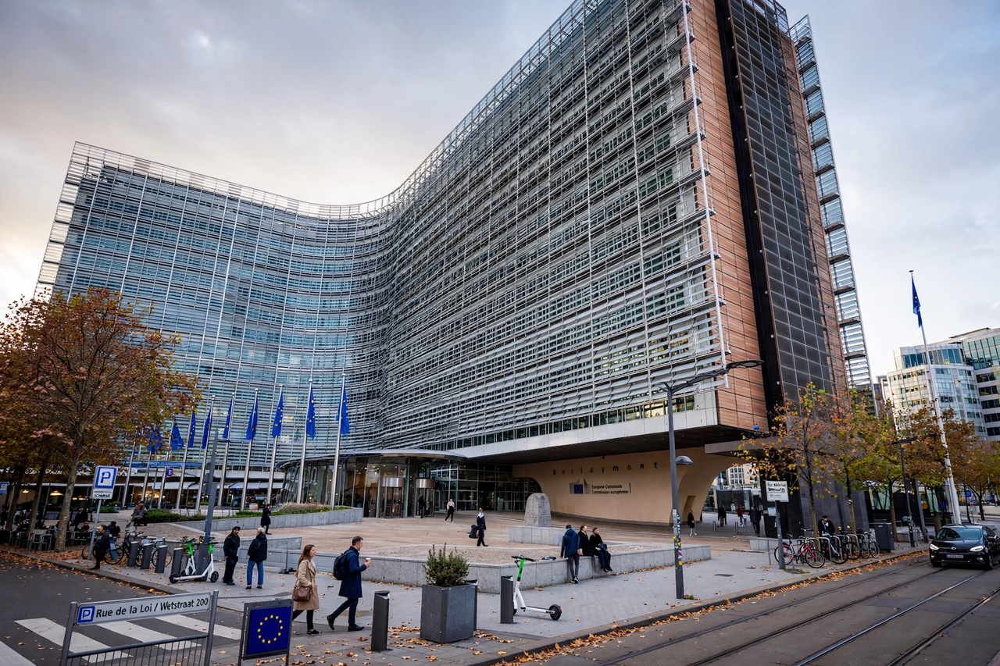

President of the European Commission

| Incumbent | Ursula von der Leyen (since 1 December 2019) |
|---|---|
| Nominator | European Council |
| Appointer | European Parliament (elects) |
| Term length | Five years, renewable |
| First holder | Walter Hallstein (1958) |
| Seat | Berlaymont, Brussels |
The president of the European Commission is the head of the European Commission, the executive branch of the European Union. The president chairs the College of Commissioners, sets the Commission's policy agenda and political priorities, allocates portfolios among the commissioners, and represents the Commission in dealings with the other EU institutions and internationally. The office is widely considered the most powerful in the European Union, as the Commission holds the near-exclusive right to propose EU legislation.
Appointment
Under Article 17 of the Treaty on European Union, the European Council, acting by qualified majority and "taking into account the elections to the European Parliament", proposes a candidate for president of the Commission. The candidate is then elected by the European Parliament by a majority of its component members; if the candidate fails, the European Council must propose a new one. In 2014 and 2019 the European political parties nominated lead candidates (Spitzenkandidaten) before the European elections: Jean-Claude Juncker was appointed in 2014 under this system, but in 2019 the European Council set aside the lead candidates and nominated Ursula von der Leyen, who was narrowly elected by the Parliament. Von der Leyen, the first woman to hold the office, was re-elected for a second term in July 2024 and her second Commission took office on 1 December 2024.
Role and powers
The president lays down the guidelines within which the Commission works, decides on its internal organisation, appoints vice-presidents, allocates and reshuffles portfolios, and may require an individual commissioner to resign. The president represents the Commission at meetings of the European Council (as a member), at G7 and G20 summits alongside the president of the European Council, and in the annual State of the Union address to the European Parliament. The Commission as a body is accountable to the Parliament, which may dismiss it by a motion of censure carried by a two-thirds majority.
History
The Commission's predecessor was the High Authority of the European Coal and Steel Community, headed by Jean Monnet from 1952. The first president of the Commission of the European Economic Community, established by the Treaty of Rome, was Walter Hallstein (1958–1967), whose tenure saw clashes with Charles de Gaulle culminating in the "empty chair crisis" of 1965. Later influential presidents include Jacques Delors (1985–1995), associated with the Single European Act and the path to monetary union, and José Manuel Barroso (2004–2014). The Santer Commission resigned en masse in 1999 following a report on fraud and mismanagement — the only Commission to leave office early.